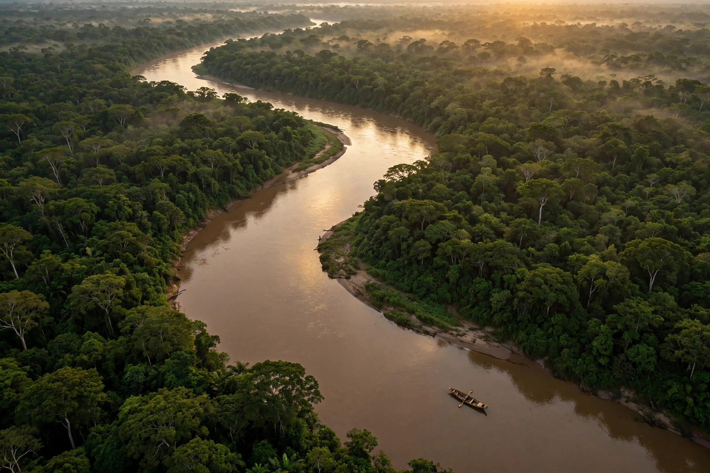

The Mamoré is a large river in Bolivia and Brazil, a principal tributary forming the Madeira River, itself a major tributary of the Amazon River. It flows north through the Bolivian Amazon lowlands.

| Countries | Bolivia, Brazil |
|---|---|
| Length | 1,930 km approx. |
| Source | Sierra de Cochabamba, Bolivia |
| Mouth | Madeira River |
Rising in the foothills east of Cochabamba as the Chapare and Mamorecillo, the Mamoré flows north across the Llanos de Moxos. It receives the Guaporé (Itenez) from the east, then joins the Beni River to form the Madeira near Villa Bella.
The floodplains support rich wetlands, river dolphins, caimans, and diverse fish. Seasonal inundation shapes the Moxos savannas, an area also known for pre-Columbian earthworks.